dep-vuln-dependencylicensechecker: Anatomy Theatre of the Wax Models

Vulnerabilities Only
No Licence Verdict
One Database Per Run
Pinned Versions or Nothing
A Clean Line Must Be Earned
Plate one: scope
The program reads a dependency manifest, asks one chosen vulnerability database about each entry it can check, and writes a report of matches. Two manifest kinds are read: a requirements style text file, and a package.json file. Two databases are offered: NVD and OSV. One run consults one database, never both.
Plate two: the licence truth
No Licence Verdict
A licence policy option exists. It defaults to MIT. It is accepted, stored, and warned about on every single run, and it is never evaluated, because the code holds no licence data for any package. The report therefore covers vulnerabilities only. Any wording that suggests a licence verdict is a defect, not a feature.
Plate three: what a machine needs
Python 3. The packaging package at 23.0 or later. The requests package at 2.28.0 or later. Network reach to the chosen database, with ten seconds allowed per query. The README prints no install step for those two packages, so this site supplies the missing line: install the requirements file after cloning.
Plate four: install, corrected
Clone the repository, then move into the directory, then install the requirements:
git clone https://github.com/ShadowGuard-AI/dep-vuln-dependencylicensechecker.git cd dep-vuln-dependencylicensechecker pip install -r requirements.txt
The clone line as printed in the README names a different organisation and would not reach this code; this plate prints the right line and says nothing more about it.
Plate five: the working invocation
There is no program file named after the repo. The run is python3 main.py, then the manifest path, then any options. Once with a text manifest and the default database, and once with a package.json manifest and OSV chosen, using placeholder paths only:
python3 main.py path/to/requirements.txt python3 main.py path/to/package.json --vulnerability_db osv
Plate six: the controls in parser order
The manifest path comes first, positional and required; a run without it never starts. The licence policy option follows, default MIT, any string accepted, none of them acted on. The database option follows, choices nvd and osv, default nvd. The output option closes the list: give a path and the report is written there with a short confirmation printed, or omit it and the report prints to the terminal.
Plate seven: parsing
Text manifests are read line by line; blank lines and comment lines pass by; each remaining line is parsed as a requirement specifier, and a line that will not parse draws a warning and is skipped. The stored version is the specifier text, not a resolved version. A package.json contributes both its dependencies and its devDependencies, tagged as npm, while text manifest entries are tagged as PyPI.
Plate eight: the pinned version gate
Pinned Versions or Nothing
Both databases answer questions about one concrete version, so only a pinned entry is ever queried: a single double equals pin in a text manifest, or a bare version in package.json. Anything looser is skipped with a warning, and a skipped entry counts as neither a success nor a failure. One trimming quirk stands on its own: a wildcard pin is trimmed down to its base figures and then queried as if the manifest had pinned exactly that version, which narrows a range without saying so anywhere else.
Plate nine: the NVD route
The query is a keyword search on the package name against the NVD 2.0 service, and only the first page of whatever comes back is examined; no later page is ever requested. A returned record counts only when the package name appears inside a CPE criteria string and the version field of that criteria string equals the pinned version exactly. Each surviving record contributes its CVE identifier, its first description text, and its CVSS version 3.1 base score, or a not available marker where that score is absent. A package whose records sit past the first page, or whose criteria spell the name differently, reads as clean. That limit stands here beside the route, not in a footnote.
Plate ten: the OSV route
The query is posted with the package name, the pinned version, and the ecosystem taken from the manifest the entry came from, so an npm entry is asked about as npm and a PyPI entry as PyPI. Each returned record contributes its identifier, its summary, its details, and its severity entry, or a not available marker.
Plate eleven: the report and the exits
A Clean Line Must Be Earned
With matches, the report names each package with its stored version text, then lists identifier, description, and severity per match. With no matches, the report says no vulnerabilities were found, and appends a warning counting failed checks when any check failed. If no manifest entry was parsed at all, the run prints that no dependencies were parsed or found to check, and exits 1 without printing the clean line. If entries were parsed but no check completed, because every query failed or every version was skipped, the run still prints or saves its report and then exits 1, refusing to let a clean sounding page stand as a result. A failed attempt to write the output file falls back to printing the report to the terminal. Missing files, an unsupported manifest suffix, and other errors also exit 1.
Final plate: licence
The code is offered under the MIT License in the repository LICENSE file, whose holder line pairs the public pen name with a shortened form in parentheses and the account handle. The initial in that line is left exactly as short as it was found.
Defects, recorded
The install line in the preserved record names a different organisation, and the licence section of the record names that same organisation; both stand verbatim in the record below and are corrected only on plate four. The usage line in the record names an executable form and no such file exists in the repository; the entry point is main.py, as plate five shows. The parameter list in the record omits the required positional manifest path, and gives the three options it lists no descriptions, no defaults, and no choices, though the parser defines all of them. The record licence section names no licence at all, only a copyright line. The repo name itself promises a licence checker, and no licence checking exists in the code.
The preserved README record
# dep-vuln-DependencyLicenseChecker A command-line tool that analyzes project dependencies and checks them for known vulnerabilities in the NVD or OSV databases. The --license_policy option is accepted but not evaluated: the code has no license data source, a warning is printed on every run, and the report covers vulnerabilities only. - Focused on Maps declared software dependencies in project manifest files (e.g., requirements.txt, package.json) to known vulnerabilities in public databases (e.g., NIST NVD, OSV). Generates a report detailing vulnerable dependencies and suggested remediation steps, such as updating to patched versions. Supports multiple dependency file formats and vulnerability data sources. Note on versions: dependency entries are stored as requirement specifiers. Both checks need one concrete version, so only a pinned entry (a single == version, or a bare version in package.json) is queried; a range is skipped with a warning. The NVD check compares that concrete version to the version field of the CPE criteria in the response. Note on empty manifests: if no dependencies are parsed or found to check (an empty requirements file, a file whose lines do not parse, or a package.json with no dependency keys), the run prints "No dependencies were parsed/found to check." and exits 1. It does not print the clean line. The clean line and exit 0 are reserved for runs that completed at least one check. ## Install `git clone https://github.com/ShadowStrikeHQ/dep-vuln-dependencylicensechecker` ## Usage `./dep-vuln-dependencylicensechecker [params]` ## Parameters - `-h`: Show help message and exit - `--license_policy`: No description provided - `--vulnerability_db`: No description provided - `--output`: No description provided ## License Copyright (c) ShadowStrikeHQ